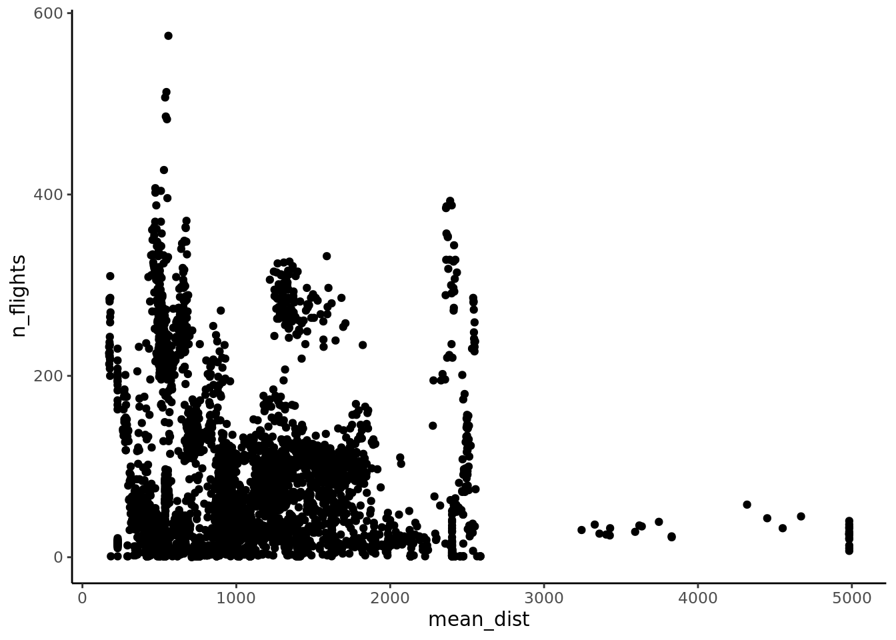
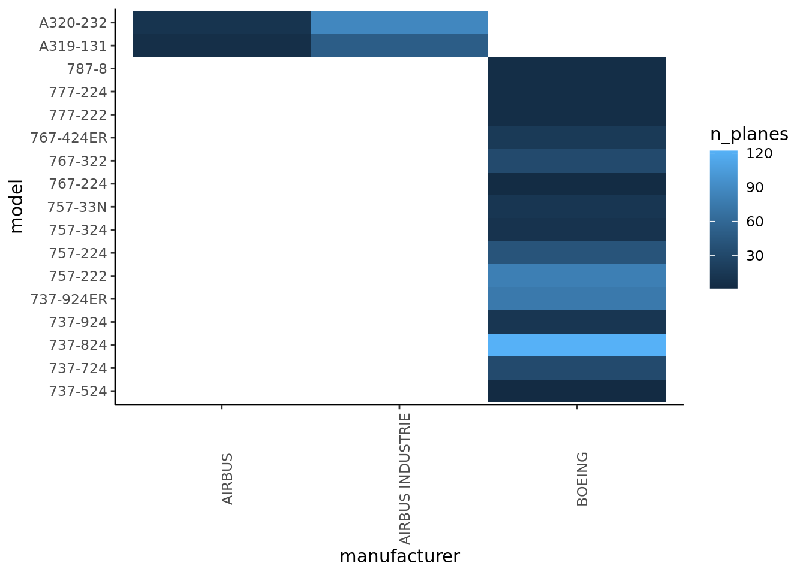

library(tidyverse)
library(DBI)
library(duckdb)Intro to SQL with DuckDB
duckdb
SQL
A beginner’s guide to SQL using DuckDB
Hi, in this project we will be creating a database using DuckDB and querying it using SQL. We will use the nycflights13 package to provide the data for our database. This guide will walk you through the steps to set up the database, connect to it, and perform various queries.
Create the Flights Database in DuckDB
First we create the databse based on the tables in the nycflights13package. This code chunk is only run once to initalize the database file. It loads the data from the package and writes it to the DuckDB database. We first load the data into R, then write it to the tables in DuckDB. Note that to write to tables in DuckDB you must set read_only to false.
# setwd("./projects")
library(nycflights13)
data(airlines)
data(airports)
data(flights)
data(planes)
data(weather)
con <- dbConnect(
drv = duckdb(),
dbdir = "data/flights_db.duckdb",
read_only = FALSE
)
dbWriteTable(con, "airlines", airlines, overwrite = TRUE)
dbWriteTable(con, "airports", airports, overwrite = TRUE)
dbWriteTable(con, "flights", flights, overwrite = TRUE)
dbWriteTable(con, "planes", planes, overwrite = TRUE)
dbWriteTable(con, "weather", weather, overwrite = TRUE)
dbDisconnect(con, shutdown = TRUE)print(getwd())[1] "/home/maya/code/portfolio_website/projects"Query the Database
With the database set up we are now able to access the data as a data consumer to gain insights and analytics from it. As a data consumer we will first connect to the database, then use that connection to pull data using SQL queries to draw insights and data-driven conclusions.
Create the query connection
Here we establish the connection to the locally hosted DuckDB instance. As a data consumer we will only read data so read_only will be set to true. This connection will power all of our future analytics.
con_flights <- DBI::dbConnect(
drv = duckdb::duckdb(),
dbdir = "./data/flights_db.duckdb",
read_only = TRUE
)Ways to Query In Quarto
Query with a SQL chunk
In quarto we can use SQL to directly query ### Find the Carriers
SELECT * FROM airlines LIMIT 10;| carrier | name |
|---|---|
| 9E | Endeavor Air Inc. |
| AA | American Airlines Inc. |
| AS | Alaska Airlines Inc. |
| B6 | JetBlue Airways |
| DL | Delta Air Lines Inc. |
| EV | ExpressJet Airlines Inc. |
| F9 | Frontier Airlines Inc. |
| FL | AirTran Airways Corporation |
| HA | Hawaiian Airlines Inc. |
| MQ | Envoy Air |
Query with an R chunk
List Tables
Using DBI commands we are able to send commands to DuckDB. Here we can list the tables.
tables <- dbListTables(con_flights)
print(tables)[1] "airlines" "airports" "flights" "planes" "weather" Top of ‘flights’
We can also list the first 10 entries in the flights table.
result <- DBI::dbGetQuery(
con_flights,
"
SELECT *
FROM flights
LIMIT 10
"
)
print(result) year month day dep_time sched_dep_time dep_delay arr_time sched_arr_time
1 2013 1 1 517 515 2 830 819
2 2013 1 1 533 529 4 850 830
3 2013 1 1 542 540 2 923 850
4 2013 1 1 544 545 -1 1004 1022
5 2013 1 1 554 600 -6 812 837
6 2013 1 1 554 558 -4 740 728
7 2013 1 1 555 600 -5 913 854
8 2013 1 1 557 600 -3 709 723
9 2013 1 1 557 600 -3 838 846
10 2013 1 1 558 600 -2 753 745
arr_delay carrier flight tailnum origin dest air_time distance hour minute
1 11 UA 1545 N14228 EWR IAH 227 1400 5 15
2 20 UA 1714 N24211 LGA IAH 227 1416 5 29
3 33 AA 1141 N619AA JFK MIA 160 1089 5 40
4 -18 B6 725 N804JB JFK BQN 183 1576 5 45
5 -25 DL 461 N668DN LGA ATL 116 762 6 0
6 12 UA 1696 N39463 EWR ORD 150 719 5 58
7 19 B6 507 N516JB EWR FLL 158 1065 6 0
8 -14 EV 5708 N829AS LGA IAD 53 229 6 0
9 -8 B6 79 N593JB JFK MCO 140 944 6 0
10 8 AA 301 N3ALAA LGA ORD 138 733 6 0
time_hour
1 2013-01-01 10:00:00
2 2013-01-01 10:00:00
3 2013-01-01 10:00:00
4 2013-01-01 10:00:00
5 2013-01-01 11:00:00
6 2013-01-01 10:00:00
7 2013-01-01 11:00:00
8 2013-01-01 11:00:00
9 2013-01-01 11:00:00
10 2013-01-01 11:00:00DBI::dbDisconnect(con_flights)Analytic Queries
To do some analysis of this database we will also want to plot our exploratory data pulls, so I will be using the R interface to plot using the ggplot2 package. By doing this the data is automatically pulled into my analysis environemnt as DuckDB is designed to do. The SQL queries are the same, and they can be integrated into other workflows, but in this case for analytics I demonstrate it directly with R.
Count the flights of each plane
For each plane, denoted by their tailnum, I counted the number of flights each plane went on and the average distance of the flights it took
# get the number of flights each plane went on
result <- DBI::dbGetQuery(
con_flights,
"
SELECT COUNT(all_tailnum.tailnum) AS 'n_flights', AVG(all_tailnum.distance) AS 'mean_dist', all_tailnum.tailnum
FROM(
SELECT flights.tailnum, flights.distance
FROM flights
) AS all_tailnum
GROUP BY all_tailnum.tailnum
ORDER BY n_flights DESC
"
)
head(result) n_flights mean_dist tailnum
1 575 558.6052 N725MQ
2 513 545.8908 N722MQ
3 507 537.6272 N723MQ
4 486 541.9733 N711MQ
5 483 549.4762 N713MQ
6 427 529.8806 N258JBggplot(result) +
aes(
x = mean_dist,
y = n_flights
) +
geom_point() +
theme_classic()
Find the fleet compositions
Here we pulled the information about each airline carrier’s fleet of planes they flew a flight in this dataset. We assessed their manufacturer and model and counted the number of each of the types of planes by distinct tailnum.
result <- dbGetQuery(
con_flights,
"
SELECT airlines.name, manufacturer, model, COUNT(distinct_tailnums.tailnum)
FROM (
SELECT DISTINCT flights.tailnum, flights.carrier, manufacturer, model
FROM flights
LEFT JOIN planes
ON flights.tailnum = planes.tailnum
) AS distinct_tailnums
LEFT JOIN airlines
ON distinct_tailnums.carrier = airlines.carrier
GROUP BY airlines.name, manufacturer, model
"
)
head(result) name manufacturer model
1 Delta Air Lines Inc. BOEING 757-231
2 American Airlines Inc. CESSNA 550
3 United Air Lines Inc. AIRBUS A319-131
4 Virgin America AIRBUS A320-214
5 Southwest Airlines Co. BOEING 737-3H4
6 American Airlines Inc. MARZ BARRY KITFOX IV
count(distinct_tailnums.tailnum)
1 8
2 1
3 5
4 43
5 105
6 1result %>%
# remove NAs
filter(!is.na(manufacturer)) %>%
filter(!is.na(model)) %>%
# Plot only United Air Lines Inc.
filter(name == "United Air Lines Inc.") %>%
rename(n_planes = "count(distinct_tailnums.tailnum)") %>%
ggplot() +
aes(
x = manufacturer,
y = model,
fill = n_planes
) +
geom_tile() +
# Used to plot all airlines at once
# facet_wrap(~name, scales = "free") +
theme_classic() +
theme(
axis.text.x = element_text(angle = 90)
)